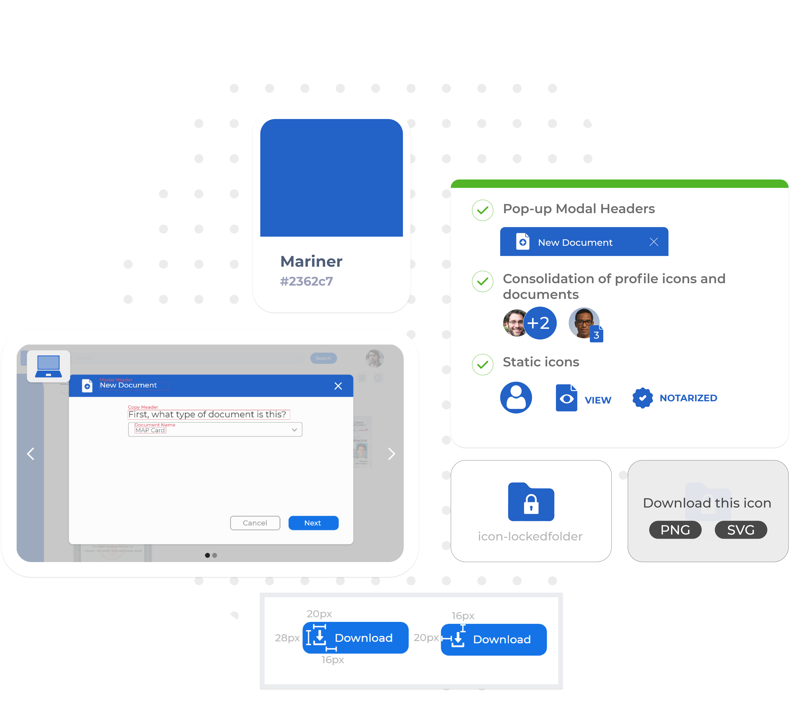
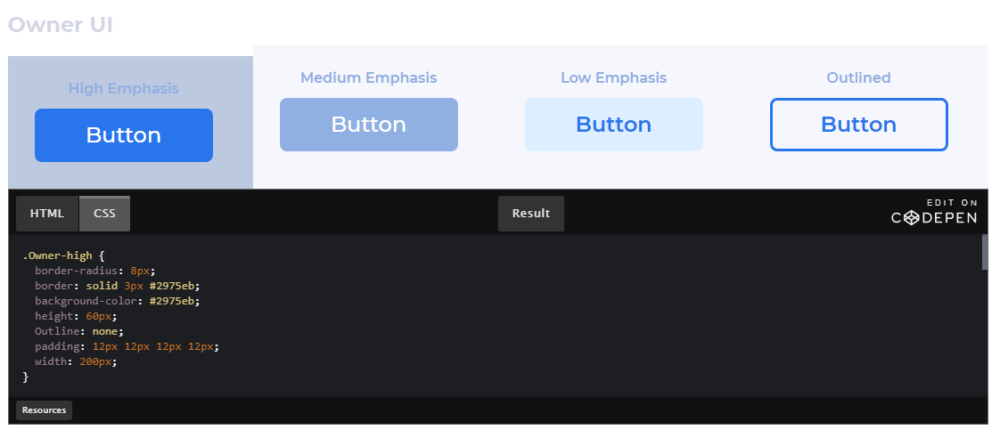
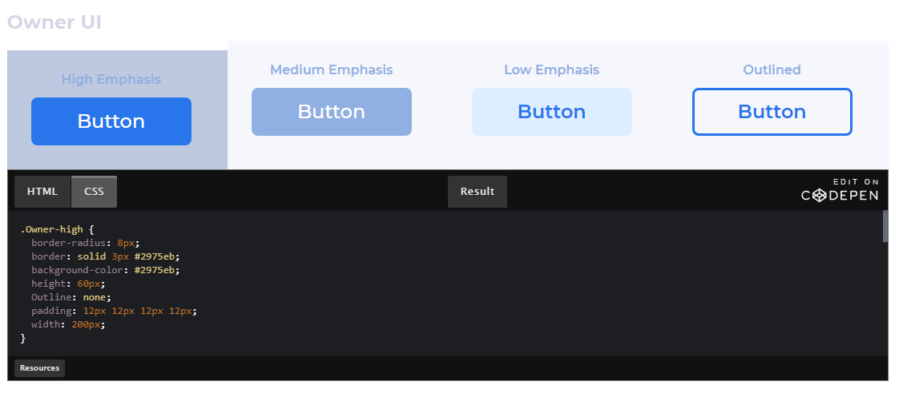

Who is this for?
This guide is for scrappy designers, front-end devs and other product workflow hackers. The purpose of this design system is to serve as a catalyst for product development as the platforms grows and scales from MVP to launch.

UI/UX Designers
Will find a plethora of guidelines, pointers, rules and specifications for design elemnts such as layout, typography and color.
Front-end Developers
Will find a useful collection of icons, as well as a component library and general UI design rules.

Quality Assurance Specialists
Will find valuable resources around accessibility, privacy and the general information architecture of the platform.
Find what's useful to you!
This design system serves an exhaustive compendium of design artifacts and guidelines. Its holistic and broad-reaching nature means not everything will be useful to your particular role, but feel free to browse and pick the things that can help you with your workflow.
Why does this matter?
Easier communication
It's easier for a team to work together if you've got access to the same research, assets and tools. This is a good way to familiarize yourself with LifeFiles together.
Easier replication
No need to start from scratch. This design system includes a component library that packages every single piece of the platform in specific components you can iterate, and build upon.
Accelerated workflow
Why spend 20 minutes looking for a specific icon if you can keep them all here? This is a compendium meant to gather all artifacts in one place so you can focus on what matters... maintaining and improving LifeFiles!
Review, learn & use
Once you find the bits that are good to your particular task, review the materials attached and take some time to learn relevant guidelines. Then download your asset and accelerate your workflow!
 

And always feel free to reach out...
This design system was designed and built by me! If you need any assistance using it, or you'd like help pushing updates to this site, please reach out to me at p.portilladv@gmail.com
I'm happy to help the project continue to evolve and succeed.

Generally, you can describe LifeFiles in the following way: 'LifeFiles is a secure document storage platform that allows people to upload, store, and share their documents digitally. It also facilitates digital document notarization. We designed, built, and tested it with people experiencing homelessness to help facilitate access to services.'